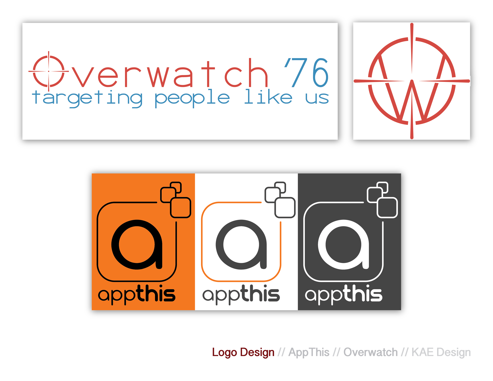
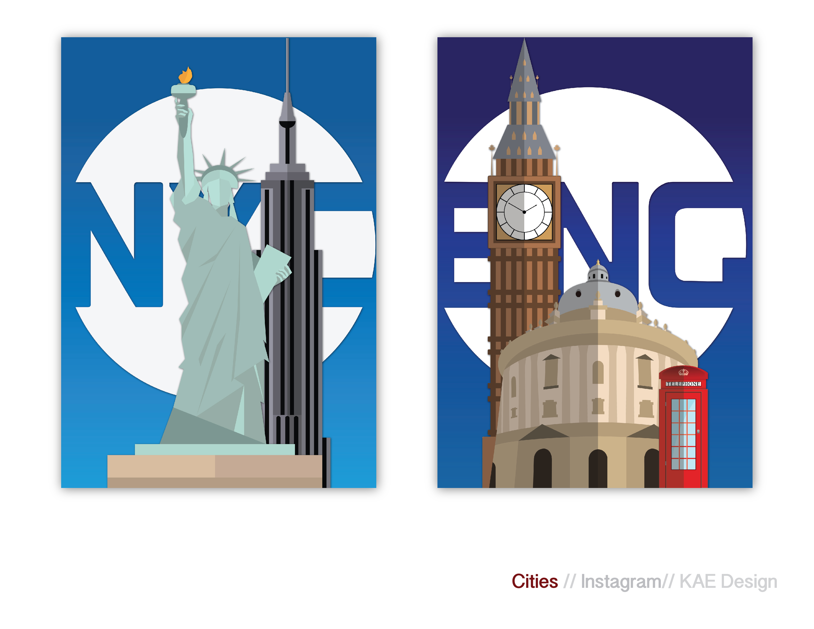
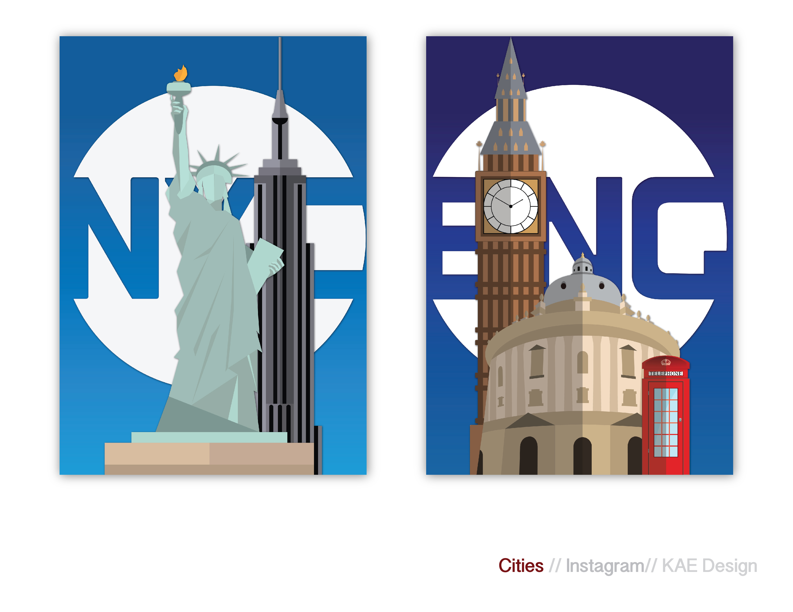
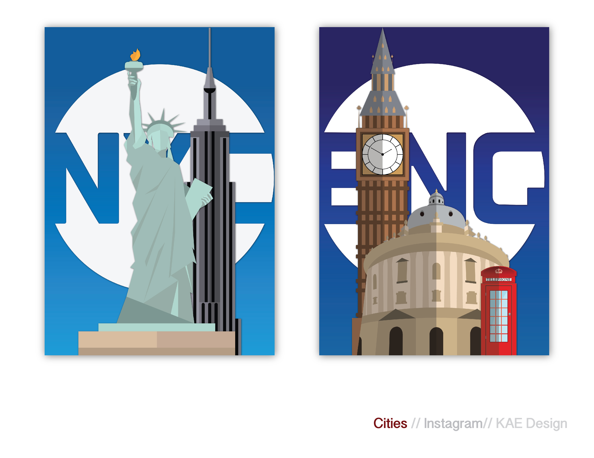

my name is Kevin Ebrahimoff. Graphic Design is my passion; designing uniquly for you is my mission. I am a freelance graphic designer based in New York. My work ranges from illustrations, abstract design, and digital art to photo manipulation and edits.
This is going to be a self scrolling between these with icon of each
Logo
Icons
Posters
Photograph Edits and manipulations
My Work
all my subject designs will go gridded here



 
